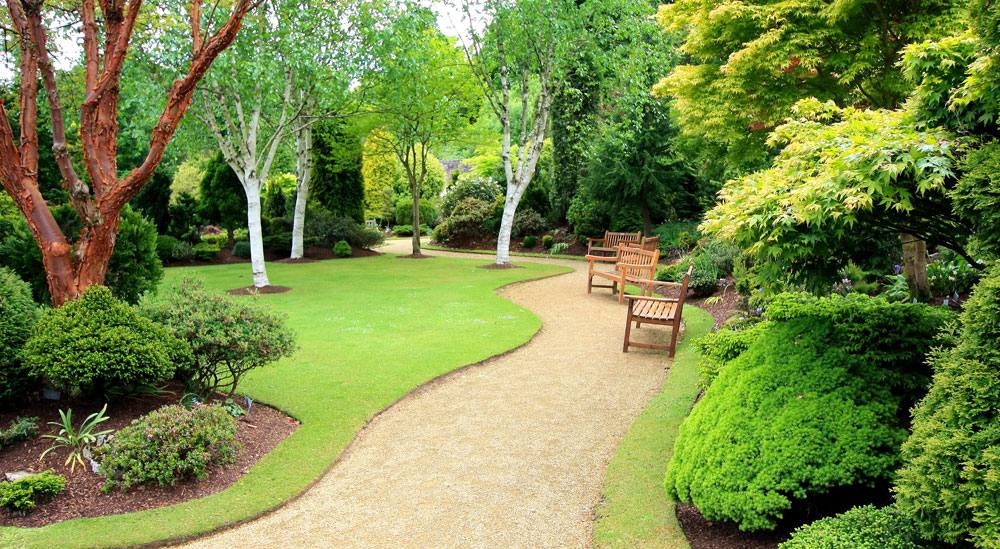

How to create your own edible landscape in your landscaping design
Growing an edible landscape
Edible landscaping is the oldest type of gardening. When we talk and consider edible landscaping, we are returning to our roots. We create something that will not only look beautiful, but also provide food for your family throughout the year.
Many people assume that edible gardening is only for vegetables. They also believe that it requires a special area or allotment to grow vegetables, fruits, herbs, and other edible foods. It is possible to incorporate your edible plants into your landscape with little effort, almost without interruption.
A well-planned edible landscape will give you fresh food all year round, as long as it is harvested when it is available.
Edible Landscape Trees
Because of their dominance over the landscape, trees can often be the basis of your landscaping. There are many trees that bear fruit, and they make delicious and delicious crops. Some of the best examples are the cherry, pear and apricot trees, as well as the citrus, peach and citrus trees.
Each one is stunning in its own way and they are even more beautiful when in bloom. شركة تنسيق حدائق Trees can grow to be quite large, so it is important to maintain their shape and size. Trees are not often used in landscaping plans. The mess they make when they drop their fruit can also cause problems for some landscapers. However, you will be able to enjoy the best edible landscapes if you carefully monitor and harvest the fruits.

Berries for your edible landscape
It is possible to grow many edible berries in very little space. You can either create space within your borders or grow them in pots that you place wherever you want them. Strawberries, Raspberries, and Blackberries are my favourites. But there are many other options. Although they look and feel different, each one can be controlled and shaped. Nearly all edible fruits are easy to grow. Many of them grow naturally in the wild.
Vines
You can make a beautiful centerpiece for your landscape and even make it edible with a little imagination. You can create stunning designs with vines if they grow and creep in a way that allows you to make them edible.
You can direct where your vines will grow and adjust the colour in your landscape. This includes vertically, over fences, shading, and creating shades.
Edible Vegetables and Fruit Creepers
Some vegetables' foliage and plant growth will creep over the ground.
The Edible Landscape: Herbs
Rosemary and Sage are the most common herbs. Visit your local nursery to get herbs. If you know someone with a herb garden, تنسيق حدائق منزلية صغيرة you can take some cuttings and soon you will have a fully grown shrub or plant.
Edible Bushes
Many edible bushes produce delicious fruits like tomatoes, chilli's and lemons. While some of these depend on the climate, others can grow wherever you place them.
If you don't have the right climate, I recommend that you grow the Chilli indoors. They are amazing! A mini greenhouse is a great option for tomatoes lovers. They grow fast and produce delicious tomatoes that last a long time.